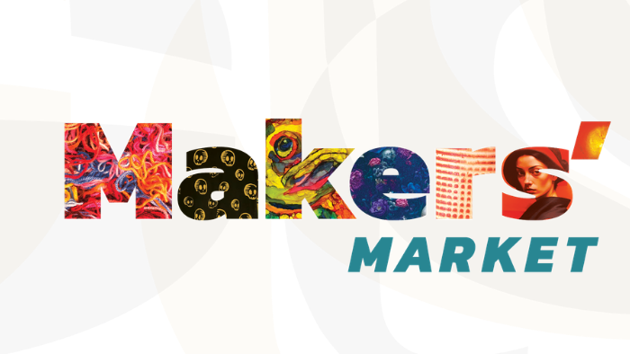

Spring Makers’ Market
Arts Alliance Forest Park is pleased to bring you the Spring Makers’ Market on Saturday, May 9th, 11 – 4 pm.
The Maker’s Market is free, located inside businesses, and hosts a variety of locally made creative arts and crafts. Vendors are juried artists, producing paintings, drawings, prints, photography, comics, multimedia arts, fiber arts and crafts, pottery, jewelry, woodworks, and more!
Enjoy the opportunity to purchase affordable art and products, and meet the artist who created them. You will be inspired, whether you are an artist, admirer, or home decorator.
The market is located inside these Madison Street Businesses: Robert’s Westside, Brown Cow, Table and Lain, and 7410 Madison Street.